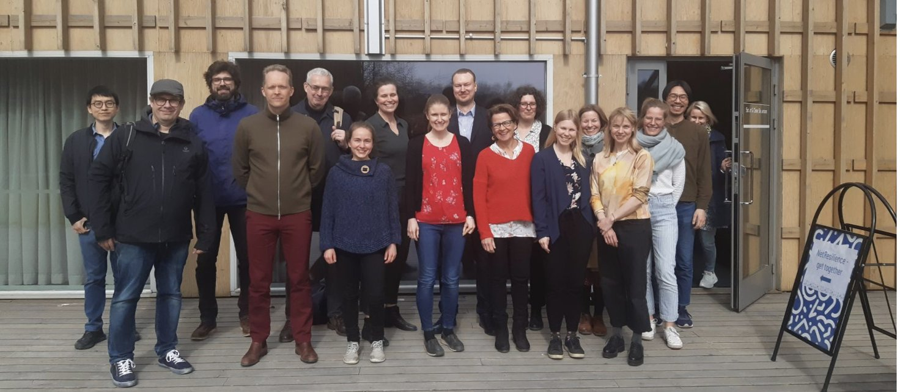

Research projects

Ongoing projects
Social networks, fertility and wellbeing in ageing populations (NetResilience) — co-PI and fertility work package leader.
MIGSCENE: population projections for migration scenarios, human capital development and sustainable integration — leader of WP4, Building Youth Capabilities.
Effects of screen use on romantic and family relations: the book Family Relationships in the Digital Era with the chapter "Fertility desires in the digital era", and a 2022 report in Finnish.
Towards a resilient future of Europe (FutuRes) — partner, EU Horizon CL2 "Socio-economic effects of ageing societies".
Couple relations in old age (LoveAge).
Social networks in an ageing population (FINNÄT) — director.
Research infrastructures
I have initiated and led several large Finnish data collections:
- Generational Transmissions in Finland longitudinal surveys
- Survey of Health, Ageing and Retirement in Finland (part of SHARE-ERIC)
- Generations and Gender Survey Finland (part of the Generations and Gender Programme)
- Fertility Preferences: Global Data 1936–2025, a repository created in 2026